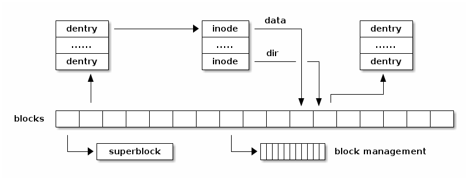

SO2 课程 08——文件系统管理¶
课程目标：¶
- 文件系统抽象
- 文件系统操作
- Linux VFS
- Linux I/O 管理概述
文件系统抽象¶
文件系统是一种在存储设备（如硬盘、固态硬盘或闪存）上组织文件和目录的方式。有许多类型的文件系统（例如FAT、ext4、btrfs、ntfs），在单个运行的系统上，我们可以同时使用同一种文件系统的多个实例。
尽管不同文件系统用来组织存储设备上的文件、目录、用户数据和元数据（内部数据）的数据结构不一致，但几乎所有文件系统都使用了一些常见的抽象：
- 超级块（superblock）
- 文件（file）
- 索引节点（inode）
- 目录项（dentry）
其中一些抽象同时存在于磁盘和内存中，而另一些只存在于内存中。
超级块 抽象包含有关文件系统实例的信息，如块大小、根索引节点、文件系统大小。它既存在于存储中，也存在于内存中（用于缓存目的）。
文件 抽象包含有关已打开文件的信息，如指向当前文件的指针。它只存在于内存中。
索引节点 用于标识磁盘上的文件。它既存在于存储中，也存在于内存中（用于缓存目的）。每个索引节点全系统唯一，用于标识文件，并具有各种属性，如文件大小、访问权限、文件类型等。
注解
文件名不是 file 的属性。
目录项 将名称与索引节点关联起来。它既存在于存储中，也存在于内存中（用于缓存目的）。
下图显示了各种文件系统抽象在内存中的关系：

请注意，并非所有抽象之间的一对多关系都在图示中表示出来。
多个文件描述符可以指向同一个 file，因为我们可以使用 dup() 系统调用来复制文件描述符。
如果我们多次打开相同的路径，多个 file 抽象可以指向同一个 dentry。
如果使用硬链接的话，多个 dentry 可以指向同一个 inode。
下图显示了存储中文件系统抽象之间的关系：
该图示显示, 超级块 通常存储在文件系统的开头，各种块用于不同的目的：一些用于存储 dentry，一些用于存储 inode，还有一些用于存储用户数据块。还有用于管理可用空闲块的块（例如简单文件系统的位图）。
下图显示了一个非常简单的文件系统，其中块按功能分组：
- 超级块包含有关块大小以及 IMAP、DMAP、IZONE 和 DZONE 区域的信息。
- IMAP 区域由多个块组成，其中包含用于 inode 分配的位图；它维护 IZONE 区域中所有 inode 的已分配/空闲状态。
- DMAP 区域由多个块组成，其中包含用于数据块的位图；它维护 DZONE 区域中所有块的已分配/空闲状态。

文件系统操作¶
下图显示了文件系统驱动程序与文件系统“堆栈”的其他部分之间交互的高级概述。为了支持多种文件系统类型和实例，Linux 实现了一个庞大而复杂的子系统来处理文件系统管理。这被称为虚拟文件系统（有时也称为虚拟文件切换），英文简称为 VFS。
VFS 将与复杂的文件管理相关的系统调用转换为由设备驱动程序实现的简化操作。文件系统必须实现以下一些操作：
- 挂载
- 打开文件
- 查询文件属性
- 从文件读取数据
- 将数据写入文件
- 创建文件
- 删除文件
接下来的章节将深入讨论其中的一些操作。
挂载文件系统¶
典型实现总结如下：
- 输入：存储设备（分区）
- 输出：指向根目录的 dentry
- 步骤：检查设备，确定文件系统参数，定位根 inode
- 示例：检查魔数，确定块大小，读取根 inode 并创建 dentry
打开文件¶
典型实现总结如下：
- 输入：路径
- 输出：文件描述符
- 步骤：
- 确定文件系统类型
- 对于路径中的每个名称：查找父级 dentry，加载 inode，加载数据，找到 dentry
- 创建指向最后一个 dentry 的新的 file
- 在文件描述符表中找到一个空闲条目，并将其设置为 file
向文件写入数据¶
典型实现总结如下：
- 输入：文件描述符、偏移量、长度、数据
- 输出：
- 步骤：
- 分配一个或多个数据块
- 将分配的块添加到 inode 中并更新文件大小
- 将数据从用户空间复制到内部缓冲区，并将其写入存储
目录¶
目录是包含一个或多个 dentry 的特殊文件。
删除文件¶
典型实现总结如下：
- 输入：路径
- 输出：
- 步骤：
- 确定父级 inode
- 读取父级 inode 数据块
- 查找并删除 dentry（检查链接）
- 当最后一个 file 关闭时：释放数据块和 inode 块
Linux 虚拟文件系统¶
尽管最初引入 VFS 到 UNIX 内核的主要目的是支持多个文件系统类型和实例，但一个副作用是简化了文件系统设备驱动程序的开发，因为现在命令的部分是在 VFS 中实现的。几乎所有的缓存和缓冲区管理都由 VFS 处理，只需将高效的数据存储管理留给文件系统设备驱动程序。
为了处理多个文件系统类型，VFS 引入了先前介绍的通用文件系统抽象。请注意，文件系统驱动程序还可以在内存中使用自己特定的文件系统抽象（例如 ext4 的 inode 或 dentry），而存储上可能存在不同的抽象。因此，我们可能会得到三种略有不同的文件系统抽象：一种是 VFS 的抽象——始终在内存中，另外两种是特定文件系统的抽象——一种是文件系统驱动程序使用的内存抽象，另一种是存储上的抽象。
{kind=link}
超级块操作¶
VFS 要求所有文件系统实现一组“超级块操作”。
它们负责初始化、更新和释放 VFS 超级块：
fill_super()——读取文件系统统计信息（例如总的 inode 数目、空闲的 inode 数目、总块数、空闲的块数）write_super()——在存储上更新超级块信息（例如更新空闲 inode 或数据块的数目）put_super()——释放与文件系统实例相关联的任何数据，在卸载文件系统时调用
下一类操作处理操作文件系统的 inode。这些操作接收 VFS inode 作为参数，但文件系统驱动程序可能在内部使用自己的 inode 结构，如果是这样，它们将根据需要在它们之间进行转换。
下面是超级块操作的摘要：
|
|
Inode 操作¶
当 VFS 与文件系统设备驱动程序交互时，调用的下一组操作是“inode 操作”。不符直觉的是，这些操作主要处理操作 dentry——查找文件名、创建、链接和删除文件、处理符号链接、创建和删除目录。
以下是重要 inode 操作列表：
|
|
Inode 缓存¶
inode 缓存用于避免每次需要读取或更新 inode 时都要对存储器执行 inode 读取和写入操作。缓存使用哈希表，inode 通过哈希函数进行索引，该哈希函数以超级块（特定文件系统实例的超级块）和与 inode 相关联的 inode 号作为参数。
inode 被缓存，直到文件系统被卸载、inode 被删除或系统进入内存压力状态。当发生这种情况时，Linux 内存管理系统将根据 inode 的访问频率释放 inode 缓存中的 inode。
- 将 inode 缓存到内存中，以避免昂贵的存储操作
- inode 被缓存，直到触发低内存条件
- inode 使用哈希表进行索引
- inode 哈希函数以超级块和 inode 号作为输入
目录项缓存¶
- 状态：
- 已使用——d_inode 有效且 dentry 对象正在使用中
- 未使用——d_inode 有效，但 dentry 对象未在使用中
- 负——d_inode 无效；尚未加载 inode 或文件已被删除
- 目录项缓存
- 已使用的目录项列表（dentry->d_state == used）
- 最近使用的目录项列表（按访问时间排序）
- 哈希表以避免搜索树
页面缓存¶
- 缓存文件数据而非块设备数据
- 使用
struct address_space将文件偏移转换为块偏移 - 用于 read / write 和 mmap
- 使用基数树（radix tree）
/**
* struct address_space——可缓存、可映射对象的内容。
* @host: 所有者，可以是 inode 或 block_device。
* @i_pages: 缓存的页面。
* @gfp_mask: 用于分配页面的内存分配标志。
* @i_mmap_writable: VM_SHARED 映射的数量。
* @nr_thps: 页面缓存中的 THP 数量（仅用于非 shmem）。
* @i_mmap: 私有和共享映射的树。
* @i_mmap_rwsem: 保护 @i_mmap 和 @i_mmap_writable。
* @nrpages: 页面条目的数量，由 i_pages 锁保护。
* @nrexceptional: 阴影或 DAX 条目，由 i_pages 锁保护。
* @writeback_index: 写回的起始位置。
* @a_ops: 方法。
* @flags: 错误位和标志（AS_*）。
* @wb_err: 最近发生的错误。
* @private_lock: 由 address_space 所有者使用。
* @private_list: 由 address_space 所有者使用。
* @private_data: 由 address_space 所有者使用。
*/
struct address_space {
struct inode *host;
struct xarray i_pages;
gfp_t gfp_mask;
atomic_t i_mmap_writable;
#ifdef CONFIG_READ_ONLY_THP_FOR_FS
/* number of thp, only for non-shmem files */
atomic_t nr_thps;
#endif
struct rb_root_cached i_mmap;
struct rw_semaphore i_mmap_rwsem;
unsigned long nrpages;
unsigned long nrexceptional;
pgoff_t writeback_index;
const struct address_space_operations *a_ops;
unsigned long flags;
errseq_t wb_err;
spinlock_t private_lock;
struct list_head private_list;
void *private_data;
} __attribute__((aligned(sizeof(long)))) __randomize_layout;
struct address_space_operations {
int (*writepage)(struct page *page, struct writeback_control *wbc);
int (*readpage)(struct file *, struct page *);
/* Write back some dirty pages from this mapping. */
int (*writepages)(struct address_space *, struct writeback_control *);
/* Set a page dirty. Return true if this dirtied it */
int (*set_page_dirty)(struct page *page);
/*
* Reads in the requested pages. Unlike ->readpage(), this is
* PURELY used for read-ahead!.
*/
int (*readpages)(struct file *filp, struct address_space *mapping,
struct list_head *pages, unsigned nr_pages);
void (*readahead)(struct readahead_control *);
int (*write_begin)(struct file *, struct address_space *mapping,
loff_t pos, unsigned len, unsigned flags,
struct page **pagep, void **fsdata);
int (*write_end)(struct file *, struct address_space *mapping,
loff_t pos, unsigned len, unsigned copied,
struct page *page, void *fsdata);
/* Unfortunately this kludge is needed for FIBMAP. Don't use it */
sector_t (*bmap)(struct address_space *, sector_t);
void (*invalidatepage) (struct page *, unsigned int, unsigned int);
int (*releasepage) (struct page *, gfp_t);
void (*freepage)(struct page *);
ssize_t (*direct_IO)(struct kiocb *, struct iov_iter *iter);
/*
* migrate the contents of a page to the specified target. If
* migrate_mode is MIGRATE_ASYNC, it must not block.
*/
int (*migratepage) (struct address_space *,
struct page *, struct page *, enum migrate_mode);
bool (*isolate_page)(struct page *, isolate_mode_t);
void (*putback_page)(struct page *);
int (*launder_page) (struct page *);
int (*is_partially_uptodate) (struct page *, unsigned long,
unsigned long);
void (*is_dirty_writeback) (struct page *, bool *, bool *);
int (*error_remove_page)(struct address_space *, struct page *);
/* swapfile support */
int (*swap_activate)(struct swap_info_struct *sis, struct file *file,
sector_t *span);
void (*swap_deactivate)(struct file *file);
};
/**
* generic_file_read_iter——通用的文件系统读取例程
* @iocb: 内核 I/O 控制块
* @iter: 用于存储读取数据的目标
*
* 这是所有可以直接使用页面缓存的文件系统的“read_iter()”例程。
*
* iocb->ki_flags 中的 IOCB_NOWAIT 标志表示，当没有数据可以在等待 I/O 请求完成的情况下读取时，应返回 -EAGAIN；它不会阻止预读。
*
* iocb->ki_flags 中的 IOCB_NOIO 标志表示，对于读取或预读，不应发起新的 I/O 请求。当无法读取数据时，应返回 -EAGAIN。当触发预读时，应返回部分（可能为空）读取。
*
* 返回：
* * 拷贝的字节数，即使是部分读取
* * 负错误代码（如果 IOCB_NOIO）表示没有读取任何内容
*/
ssize_t
generic_file_read_iter(struct kiocb *iocb, struct iov_iter *iter)
/*
* 用于具有正常 get_block 功能的块设备的通用“读取页面”函数。这适用于大多数块设备文件系统。
* 异步读取页面——unlock_buffer() 和 set/clear_buffer_uptodate() 函数在 IO 完成后将缓冲区状态传播到页面结构中。
*/
int block_read_full_page(struct page *page, get_block_t *get_block)